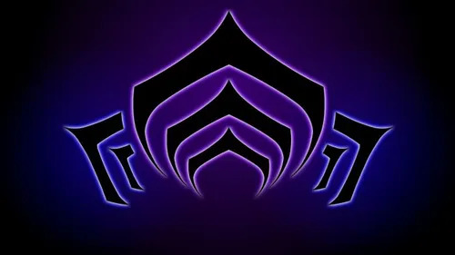
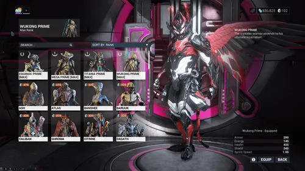
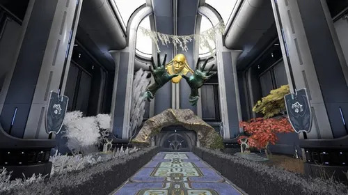

Una pequeña bienvenida, Tenno
El Sistema Origen te espera
Este es un espacio para descubrir Warframe a tu ritmo. Ponte cómodo, elige tu próximo destino y empieza por la guía.

Archivo Tenno / Explora
¿Por dónde quieres empezar?
Elige un tema y avanza a tu ritmo por el Sistema Origen.

01 / Guía del juego
Conoce el Sistema Origen
Explora la historia, las facciones y las misiones que dan forma a Warframe.
Leer la guía
02 / Historia de Warframe
Recorre la evolución del juego
Conoce las actualizaciones, el auge de la comunidad y las cifras de jugadores.
Leer la historia
03 / Personalización
Prepara tu estilo de combate
Aprende sobre Warframes, habilidades y mods para configurar tu equipo.
Ver personalización
04 / Railjack y Archwing
Viaja más allá del mapa
Descubre el Railjack, el Archwing y las actividades de exploración espacial.
Explorar Railjack
05 / Dojo
Un hogar para los Tenno
Conoce el Dojo, el Dique Seco y las funciones de la comunidad.
Entrar al Dojo
06 / Duviri
Desentra en el caos
Aprende sobre los Duviri, sus misiones y su lugar en el universo.
Leer sobre Duviri
07 / Compañeros
Nunca viajes solo
Conoce las mascotas, los acompañantes y la cooperación con la comunidad.
Ver compañeros